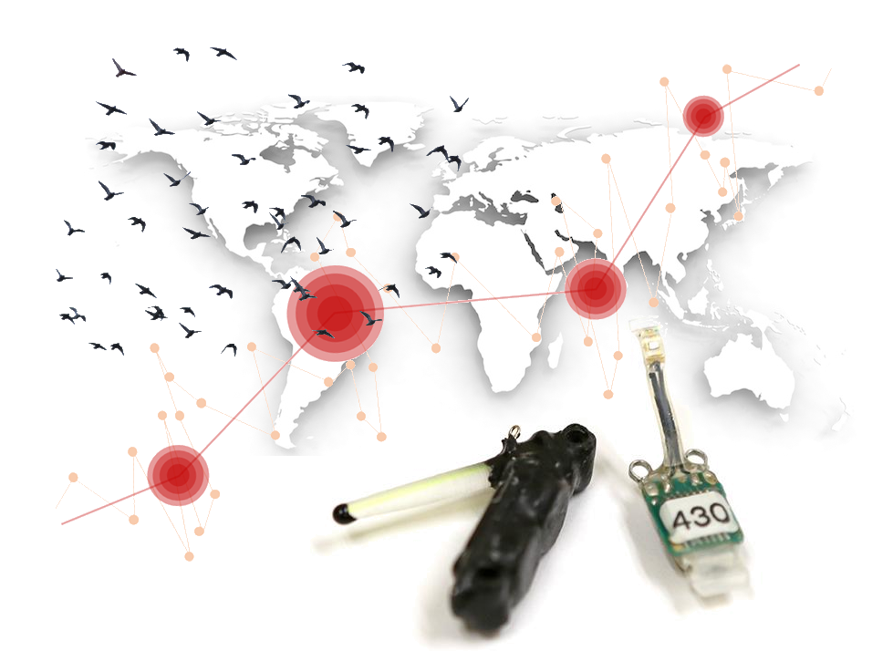

Light-level geolocation analyses
Last edited on 2018-11-13
Preface
Note: The Manual is currently under development and content may not show up (ask Simeon if you need immediate access)!

This manual is part of the following publication and has been written by the same group of authors:
Simeon Lisovski, Silke Bauer, Martins Briedis, Kiran Danjahl-Adams, Sarah Davidson, Christoph Meier, Lykke Pedersen, Julia, Karagicheva, Benjamin Merkel, Janne Ouwehand, Michael T. Hallworth, Eldar Rakhimberdiev, Michael Sumner, Caz Taylor, Simon Wotherspoon, Eli Bridge (201X) The Nuts and Bolts of Light-Level Geolocation Analyses. Journal X:xxx-xxx.
Geolocation by light is a method of animal tracking that uses small, light-detecting data loggers (referred to as geolocators) to determine the locations of animals based on the light environment they move through. Technological and fieldwork issues aside, effective use of light level geolocation requires translation of a time series of light levels into geographical locations. Geographical locations that are derived from light-level data are subject to error which directly arises from noise in the light-level data, i.e. unpredictable shading of the light sensor due to weather or the habitat (Lisovski et al. 2012). Although light-level geolocation has provided a wealth of new insights into the annual movements of hundreds of bird species and other taxa, researchers struggle with the analytical steps that are needed to obtain location estimates, interpret them, present their results, and document what they have done.
This manual has been written by some of the leading experts in geolocator analysis and is based on material created for several international training workshops. It offers code and experience that we have accumulated over the last decade, and we hope that this collection of analysis using different open source software tools (R packages) helps both newcomers and experienced users of light-level geolocation.
Acknowledgements
We want to acknowledge all people that have been involved in the development of geolocator tools as well as all participants of the many international geolocator workshops. Furthermore, we like to acknowledge Steffen Hahn and Felix Liechti organisewho organised a first workshop of the analysis of geolocator data from songbirds back in 2011. This workshop has been financially supported by the Swiss Ornithological Institute and the Swiss National Science Foundation. The National Centre for Ecological Analysis and Synthesis (NCEAS) has supported two meetings with experts in geolocator analysis in 2012 ans 2013 and many of the tools that are discussed in this manual were kick started at these meetings. We want to thank James Fox from Migrate Technology Ltd. as well as the US National Science Foundation for contiouing financial support to develop tools and organise workshops.
License

This work is licensed under a Creative Commons Attribution-NonCommercial 4.0 International License.
References
Lisovski, S, C M Hewson, R H G Klaassen, F Korner-Nievergelt, M W Kristensen, and S Hahn. 2012. “Geolocation by light: accuracy and precision affected by environmental factors.” Methods in Ecology and Evolution 3 (3): 603–12. doi:Doi 10.1111/J.2041-210x.2012.00185.X.